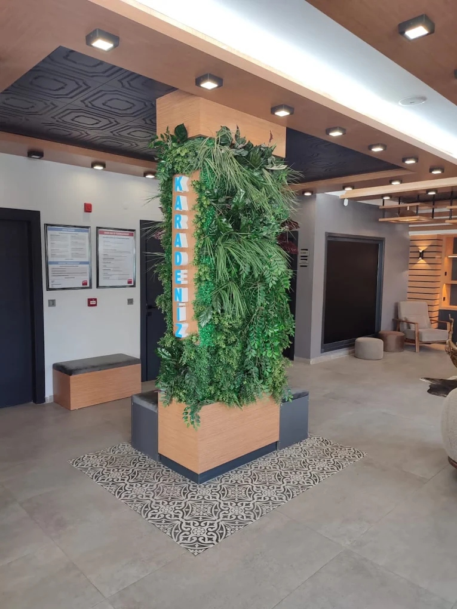
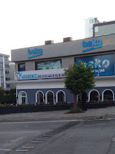
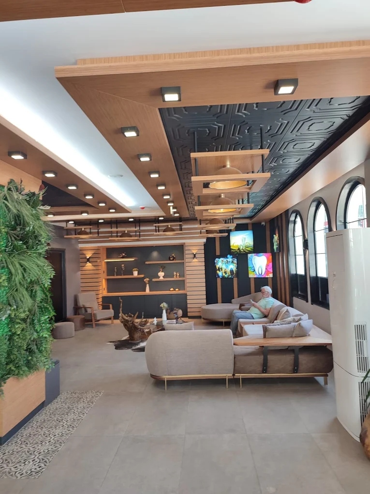
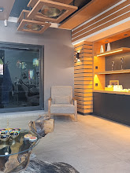

Sağlıklı Gülüşlerin Güvenilir Adresi
Karadeniz Ağız ve Diş Sağlığı Polikliniği, 2014 yılında Samsun'da başladığı sağlık yolculuğuna bugün Atakum'un en nezih lokasyonunda, tam donanımlı ve müstakil klinik binasında devam etmektedir.
Temel gayemiz; geleneksel hastane ya da klinik soğukluğundan uzak, hastalarımızın kendilerini güvende ve huzurlu hissettikleri samimi bir atmosferde dünya standartlarında ağız ve diş sağlığı hizmeti sunmaktır.
Polikliniğimizde koruyucu diş hekimliği prensipleri ön plandadır. Önceliğimiz her zaman doğal diş dokusunu azami ölçüde korumak, eksikliklerde ise en biyomimetik ve uzun ömürlü çözümleri hastaya sunmaktır.

Vizyonumuz
Karadeniz Bölgesi başta olmak üzere Türkiye'de ve yurt dışından gelen hastalar nezdinde referans gösterilen; ileri dijital teşhis araçlarını etik tıbbi değerlerle birleştiren öncü bir ağız ve diş sağlığı polikliniği olmak.
Misyonumuz
Tüm yaş gruplarından hastalarımıza; ağrısız, konforlu, kişiselleştirilmiş ve şeffaf bir tedavi süreci yaşatmak; koruyucu ağız sağlığı bilincini toplumda yaygınlaştırarak gelecek nesillere sağlıklı gülüşler bırakmak.
Bizi Farklı Kılan Temel Değerlerimiz
Hastalarımızla kurduğumuz uzun soluklu güven bağının temelinde bu prensipler yatar.
Tıbbi Etik & Dürüstlük
Yalnızca hastanın gereksinim duyduğu tedaviyi önerir, abartılı veya gereksiz uygulamalardan kesinlikle kaçınırız.
Sıfır Taviz Hijyen
Avrupa EN 13060 standartlarında B sınıfı otoklav sterilizasyonu ve her hastaya özel kapalı paketli el aletleri.
Şeffaf Bilgilendirme
Muayene sonrasında tüm tedavi aşamaları, alternatif yöntemler ve net maliyet tablosu yazılı olarak hastaya aktarılır.
Sürekli İnovasyon
Hekimlerimiz ve klinik destek personelimiz yıllık uluslararası kongre ve eğitimlerle bilgilerini sürekli tazeler.

Dijital Diş Hekimliği Çağı
Atakum şubemizde hastalarımıza sunduğumuz tedavilerin hassasiyetini ve başarısını artırmak için en güncel cihazları bünyemizde bulunduruyoruz:
- Düşük Dozlu 3D Çene Tomografisi (CBCT): Kemik kalınlığı, sinir kanalları ve sinüs boşluklarını 0.1 mm hassasiyetle 3 boyutlu analiz eder.
- Ağız İçi Dijital 3D Tarayıcı: Bulantı hissi yaratan geleneksel macunlu ölçülere son verir; saniyeler içinde dijital ölçü alır.
- Apex Buluculu Döner Aletli Endodonti: Kök kanallarının uzunluğunu milimetrik tespit ederek kanal tedavisinde %98+ başarı sağlar.
- Otoklav ve Biyolojik İndikatör Takibi: Cihaz sterilizasyonlarımız her döngüde kimyasal ve biyolojik indikatör testleriyle belgelenir.
Modern ve Ferah Klinik Ortamımız
Tedaviniz süresince rahat etmeniz için tasarlanmış dinlenme ve tedavi alanlarımız.


